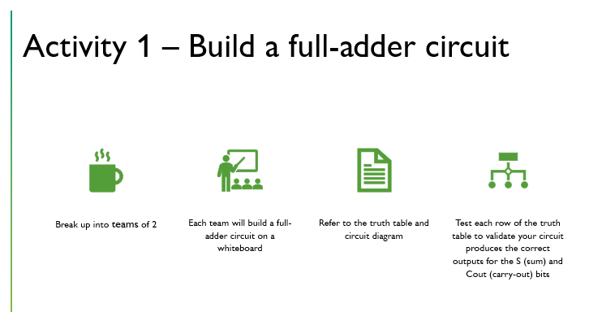
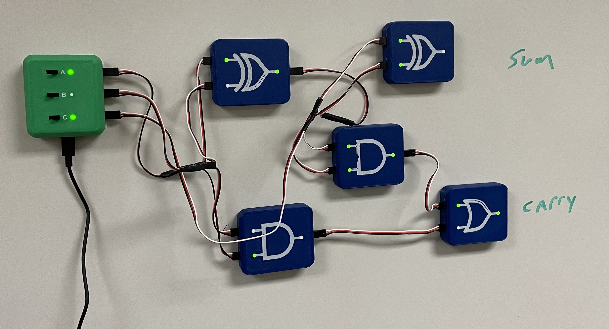
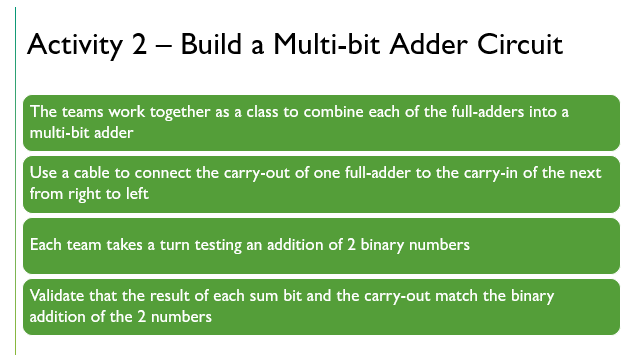
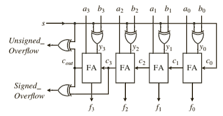

Having taken this course as a student, I learned and applied principles of inclusive, learner-centered, and evidence-based pedagogy and assessment in engineering and computer science learning environments. The course leveraged a human-centered design approach to develop us as educational designers and supported the integration of learning theory and research on pedagogy and assessment into our instructional practice. Through a combination of research literature and practical application, we gained insights into how students in engineering and computer science learn, enabling us to craft learning objectives, align assessment methods with objectives, and iterate on our educational designs to create inclusive and learner-centered environments.
For the Final Teaching Portfolio assignment, I assembled an electronic portfolio of my work from the semester. This included the revised and final versions of my learning theory and teaching philosophy, as well as a final rationale for my teaching design encompassing learning objectives and activity structures. Additionally, I included plans, examples, artifacts, outcomes, and feedback from my teaching plan and presentation, concluding with a reflection on my teaching outcomes and opportunities for continual improvement.
I have integrated the Learning and Teaching Philosophies cultivated during this course into my professional curriculum vitae, accessible via the following link: Faculty CV.
Below is the lesson I prepared and delivered as a component of this course
Software Engineers must be able to design, construct, test and maintain software across a wide variety of applications, platforms, and industries (Software Engineering, 2024a). A Software Engineering degree program combines topics across Computer Science (CS) and Software Engineering (SE) disciplines (Software Engineering (BS), 2024b). CS curriculum includes object-oriented programming, data structures and algorithms, operating systems, and computer organization and networking (Software Engineering (BS), 2024b). SE curriculum includes software engineering fundamentals, software requirements engineering, software architecture and design, software testing, and team-oriented senior software engineering projects (Software Engineering (BS), 2024b).
Course CDA 3200 Digital Systems & Architecture is one of two courses that fulfils the Accreditation Board for Engineering and Technology (ABET) requirement that the SE program provides “exposure to computer architecture and organization” (Criteria for Accrediting Computing Programs, 2020 – 2021, 2021). The course examines the micro-architecture level implementation of a processor’s instruction set architecture (ISA) through the design of logic circuits and data pathways representing physical digital electronic devices (Bourque & Fairley, 2014).
This course relies on a constructivism approach to developing a learning environment that focuses on building content knowledge through activities over memorization (Moreno, et. al., 2007). Students will be presented with individual problems to solve, and work in small groups to develop a circuit design that satisfies required inputs and outputs at the individual bit level. The instructor and teaching assistants will act as resources and advisors throughout each lesson.
The complexity of digital architecture and the speed of modern processors makes it difficult to conceptualize and assimilate how individual logic circuits combine in digital pathways to perform specific functions (Moreno, et. al., 2007). This course will rely on a combination of virtual and hands-on simulators that will allow students working in small groups to build and test individual logic circuits.
Cognitive learning in the design and analysis of a logic circuit applies to the acquisition of foundational knowledge of logic gates, Boolean algebra, truth tables and logic expressions. The full-adder circuit breaks down the arithmetic operators and instructions of a high-level programming language to binary arithmetic and the basic building block of the processor’s arithmetic logic unit (ALU).
Undergraduate software engineering and computing science students will have taken COP 2006 Programming I and PHY 2048 General Physics I prior to taking CDA 3200 Digital Systems & Architecture. The following topics will have been covered in the course prior to this lesson: number systems, logic gates, truth-tables, and logic expressions, Boolean algebra, and circuit analysis. Students are first introduced to the 2-1 multiplexer circuit to practice circuit analysis. This lesson builds on the analysis of circuits while developing the first building-block that will be expanded on to design an ALU. The multiplexer will be combined with the ALU later in the course as we develop data-paths to and from the controller, memory, and the ALU. Students will begin to see their first physical digital logic-circuits representing programming language instructions and operators.
Design and Analysis of a Three-Bit Full-Adder:
Schedule
The activities in this lesson are performed by small groups of 2-3 students. Students organize themselves into groups at the start of class and stay in their groups throughout the activities.
The instructor provides a short review of binary addition with a focus on the concepts of a bit-slice and the identification of the inputs: A, B, and carry-in, and outputs: sum and carry-out. Student work with the instructor to build a truth-table showing the inputs and outputs and then derive the Sum-of-Product (SOP) “minterm” expressions for the sum and carry-out functions.
The instructor provides standardized expressions for both the sum and carry-out functions and student groups work on combining the functions into a single logic circuit with 3-inputs and 2-outputs, forming the full-adder. Students build their circuit physically with the logic-bit simulator devices and test their circuit against their truth tables.
|  |  |
The class groups combine their individual physical full-adder circuits into a multi-bit adder, and the class discusses its implementation in an ALU. Critical thinking topics include carry-in to bit-slice 0, individual input and sum-bits to number values, carry-out and overflow, and subtraction and signed numbers.
|  | 
(Hwang 2016) |
I regularly teach the Full-Adder lesson to undergraduate students in Digital Systems. Teaching methods have included interactive whiteboard sessions where students collaborate in small groups to design, analyze, and illustrate a full-adder circuit, as well as utilizing online circuit simulators like CircuitVerse.org for emulation and testing purposes. This lesson marked the first implementation introducing the logic-circuit electronic emulator boards for hands-on experience in constructing and testing circuits.
Feedback from both peers and the professor highlighted the significance of the preparatory material leading up to this lesson in enhancing understanding and participation in the activities. However, it was noted that the review of essential concepts was somewhat rushed, according to their feedback.
During the hands-on portion, I observed that students encountered challenges in correctly connecting electric components and wires, leading to delays in the activities and constraining the time available for discussion and critical thinking exercises.
Overall feedback reflected positively on my teaching style, creating an engaging and enjoyable learning environment while effectively presenting the material. Despite some assistance, students successfully constructed the correct circuit and demonstrated the ability to anticipate and interpret the output values for a given set of inputs.
Throughout this semester course, I have delved deeper into formal learning and teaching philosophies and methodologies. I view my teaching style and interests as a blend of cognitive constructivism and social constructivism, emphasizing interactive approaches to teaching complex logic processes in an engaging manner. I believe that my lesson presentation effectively embodies the integration of these learning and teaching philosophies.
Reflecting on my experiences and feedback, I have gained insight into refining my lesson planning by prioritizing learning objectives before individual assignments and activities. Employing a backward course design approach, I aim to strategically plan assessments that emphasize the value of computer organization and architecture design within software engineering and computer science programs (Fink, 2003). Subsequently, I will develop lectures, activities, and assignments that align with the learning objectives.
Moving forward, I intend to further emphasize cognitive constructivism and social constructivism concepts in my courses. Specifically, my objective is to incorporate both individual work and group activities, while fostering a flexible pace that accommodates students' varying learning speeds. This approach will enable students to assimilate more material at an accelerated pace, while ensuring that all students cover core required objectives at their own pace.